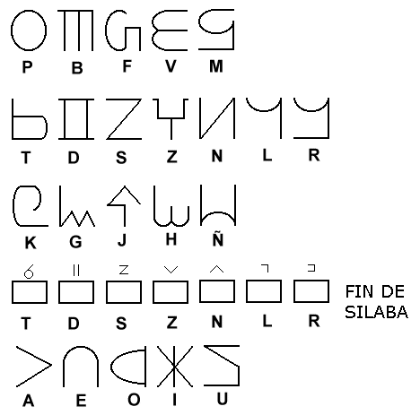

Vadde
| Oclusivas sordas | Oclusivas sonoras | Fricativas sordas | Fricativas sonoras | Nasales | Laterales | Vibrantes | |
| Bilabiales | p | b | f | v | m | ||
| Dentales | t | d | s | z | n | l | r |
| Velares | k | g | j | h | ñ |
| Terminada en t/s | Terminada en d/z | Terminada en n | Terminada en l/r | Terminada en vocal | |
| Nominativo | s | z | n | l | os |
| Acusativo | tar | dir | nur | rur | tor |
| Dativo/ablativo | tal | del | nur | rol | tol |
| Genitivo | tiñgo | dindo | numbo | rumbo | toñgo |
| Terminada en t/d | Terminada en s/z | Terminada en n | Terminada en l/r | Terminada en vocal | |
| Singular | - | - | - | - | - |
| Plural | di | zin | ni | lu | i |
| Plural Múltiple o Colectivo | tu | sun | nu | ru | u |
| Terminada en consonante | Terminada en vocal | |
| Neutral | - | - |
| Maculino | o | u |
| Femenino | a | e |
| Presente | Pasado | Futuro | |
| 1ºp.s. | o | ol | ode |
| 2ºp.s. | e | el | ede |
| 3ºp.s. | et | ed | eded |
| 1ºp.p. | i | il | id |
| 2ºp.p. | eni | elu | endi |
| 3ºp.p. | edi | edu | edid |
| Presente | Pasado | Futuro | |
| 1ºp.s. | ar | al | ade |
| 2ºp.s. | as | alsa | ase |
| 3ºp.s. | at | alta | aset |
| 1ºp.p. | e | el | ede |
| 2ºp.p. | es | elsa | ese |
| 3ºp.p. | et | elta | eset |
| Terminados en vocal | Terminados en consonante | |
| Neutral singular | etel | eren |
| Masculino singular | edol | eros |
| Femenino singular | edal | aran |
| Neutral plural | etelu | erinte |
| Masculino plural | ediruo | eriza |
| Femenino plural | edeile | areña |
| Comenzados en Consonante | Comenzados en Vocal | |
| Neutral singular | te/ke | de/ge |
| Masculino singular | to/ko | do/go |
| Femenino singular | ta/ga | da/ga |
| Neutral plural | tes/kes | dez/gez |
| Masculino plural | ti/ki | di/gi |
| Femenino plural | tas/gas | daz/gaz |
| Comenzados en vocal | Comenzados en consonante | |
| Copulativa | det | de |
| Disyuntiva | ten | te |
| Disyuntiva exclusiva | kon | ko |
| Adversativa | pa | pa |
| Consecutiva | lir | ri |
| Subordinante | el | he |
| En | Desde | Hasta/hacia | |
| Aquí | ses | sisit | side |
| Ahí | mer | mirit | mile |
| Allí | gid | gudas | gute |
| Adentro | jel | jiliz | jire |
| Afuera | ban | benad | bini |
| Arriba | kus | kusat | kile |
| Abajo | her | herad | hile |
| A la derecha | pin | penit | pipe |
| A la izquierda | dor | dovad | dohi |
| Adelante | ka | kapet | kebi |
| Atrás | tun | tunat | tilne |
| Cerca | zut | sudul | sudi |
| Lejos | ken | genet | geni |
| Ahora | le | lebaz | lepi |
| Antes | tas | dahad | dahu |
| Después | kur | kufat | kuhi |
| Entonces | gor | govad | gohi |
| Pregunta | Subordinante | Este | Ese | Aquél | Otro | Alguno | Todos | Ninguno | Cada | |
| Objeto | delfon | deston | paske | pase | pae | terno | taño | tago | foil | sinda |
| Persona | dilvi | dizsi | paski | pasi | pai | tirno | taño | tago | fil | tinla |
| Cantidad | sepul | sepul | tenku | teku | ten | - | - | - | - | - |
| Tiempo | etton | esson | assua | assuane | assuani | datgo | - | - | - | - |
| Lugar | etton | esson | zañi | zeñe | zoñud | datgo | salgo | sermu | sinna | kilon |
| Modo | beshe | bezse | tanin | pase | pae | - | - | - | - | - |
| Compañía | dilvin | dipilin | paski | pasi | pai | - | kenla | - | kenil | - |
| Instrumento | delfol | defelol | paske | pase | pae | - | - | - | - | - |
| Adjetivo | beshe | bezse | tanfin | pase | pae | - | - | - | - | - |

Etimología de las letras del alfabeto vaddindo: